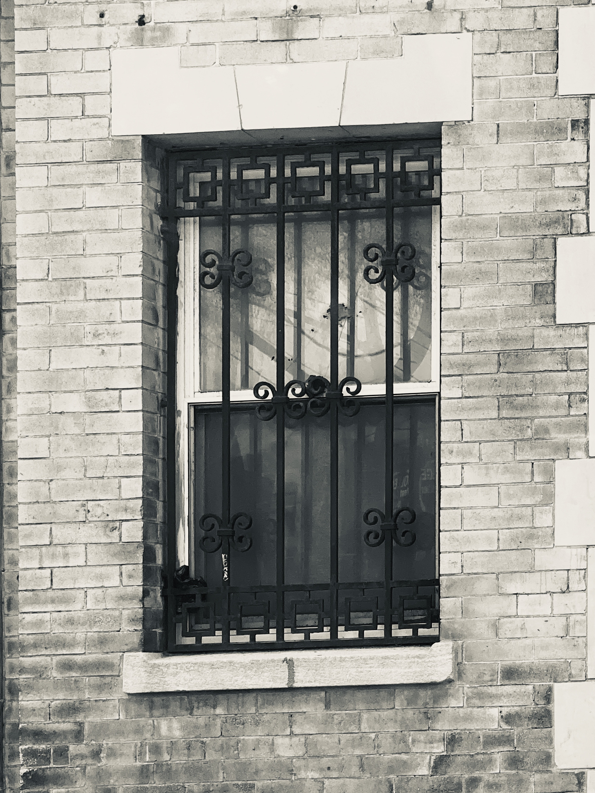
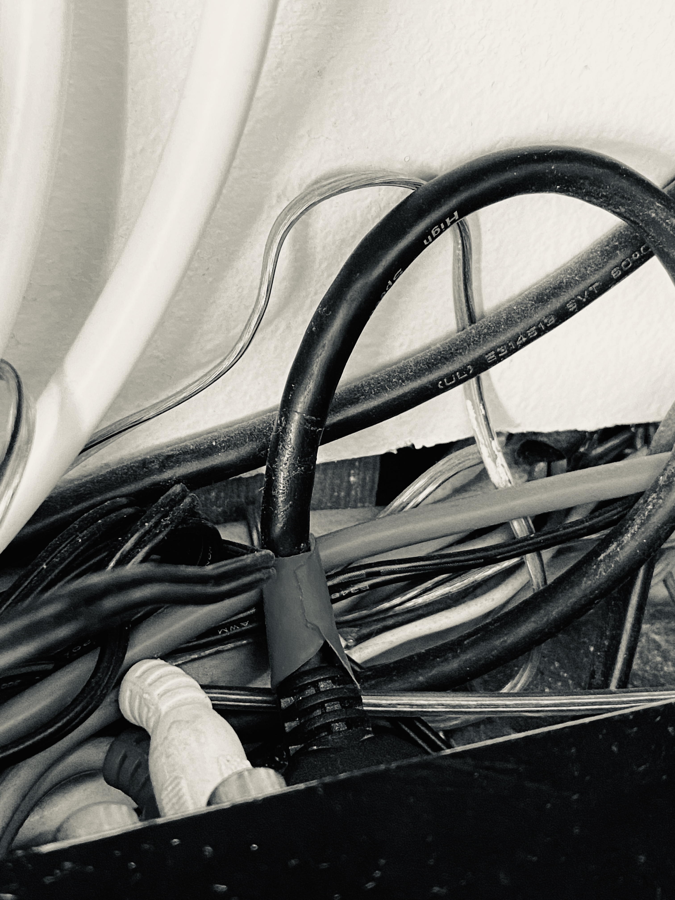

current projects
photo essay:"The Machine Stops"






Assignment: Create a visual interpretation of the assigned reading - E.M. Forster's 1909 short story "The Machine Stops", but set today. In other words, read the story, consider how similar ideas may exist in our current reality and take photographs that could be an interpretation of Forseter's Machine.